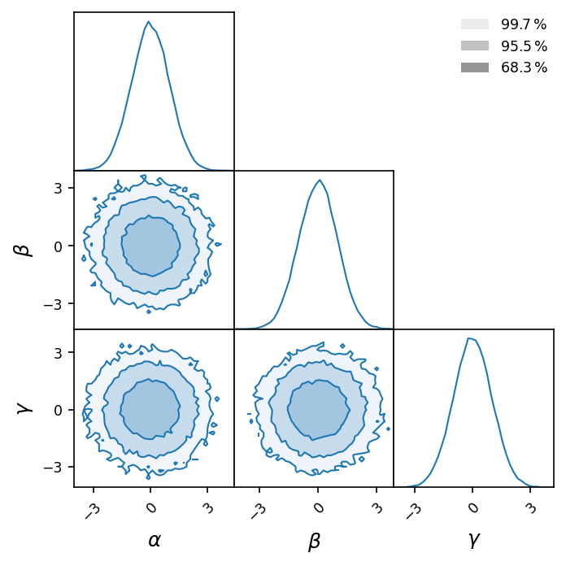
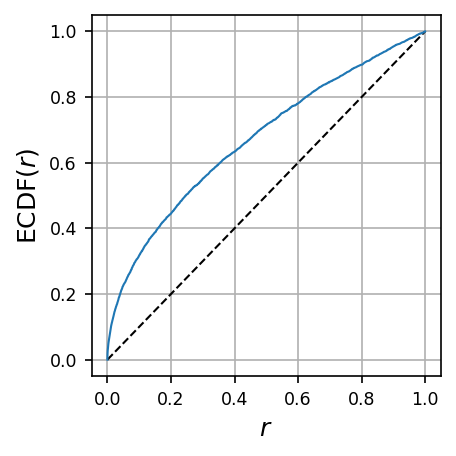

lampe.plots#
Plotting helpers.
- lampe.plots.nice_rc(latex=False)#
Returns a dictionary of runtime configuration (rc) settings for nicer
matplotlibplots. The settings include 12pt font size, higher DPI, tight layout, transparent background, etc.- Parameters
latex (bool) – Whether to use LaTeX typesetting or not.
Example
>>> plt.rcParams.update(nice_rc())
- lampe.plots.corner(data, bins=100, bounds=None, creds=[0.6827, 0.9545, 0.9973], color=None, alpha=(0.0, 0.5), legend=None, labels=None, markers=[], smooth=0, figure=None, **kwargs)#
Displays each 1 or 2-d projection of multi-dimensional data, as a triangular matrix of histograms, known as corner plot. For 2-d histograms, highest density credibility regions are delimited.
- Parameters
data (ndarray) – Multi-dimensional data, either as a table or as a matrix of histograms.
bins (Union[int, List[int]]) – The number(s) of bins per dimension.
bounds (Optional[Tuple[ndarray, ndarray]]) – A tuple of lower and upper domain bounds. If
None, inferred from data.creds (ndarray) – The region credibilities (in \([0, 1]\)) to delimit.
color (Optional[Union[str, tuple]]) – A color for histograms.
markers (List[ndarray]) – A list of points to mark on the histograms.
smooth (float) – The standard deviation of the smoothing kernels.
figure (Optional[Figure]) – A corner plot over which to draw the new one.
kwargs – Keyword arguments passed to
matplotlib.pyplot.subplots.
- Returns
The figure instance for the corner plot.
- Return type
Example
>>> data = np.random.randn(2**16, 3) >>> labels = [r'$\alpha$', r'$\beta$', r'$\gamma$'] >>> corner(data, bins=42, labels=labels, figsize=(4.8, 4.8))
{kind=link}
- lampe.plots.rank_ecdf(ranks, color=None, legend=None, figure=None, **kwargs)#
Draws the empirical cumulative distribution function (ECDF) of a rank statistic \(r \in [0, 1]\).
- Parameters
- Returns
The figure instance for the ECDF plot.
- Return type
Example
>>> ranks = np.random.rand(2**12)**2 >>> rank_ecdf(ranks)
{kind=link}